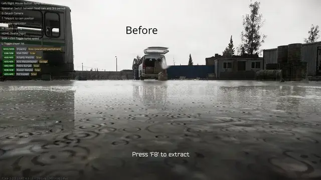
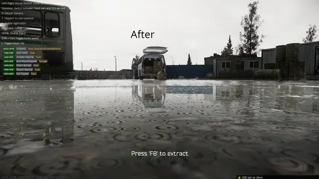
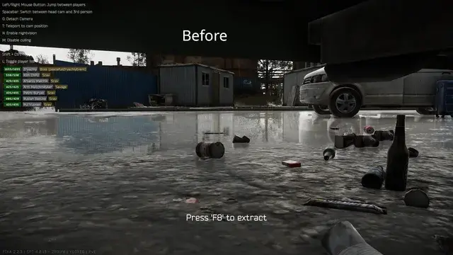
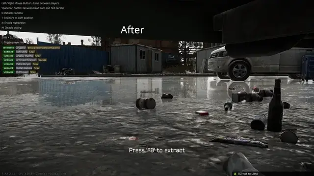
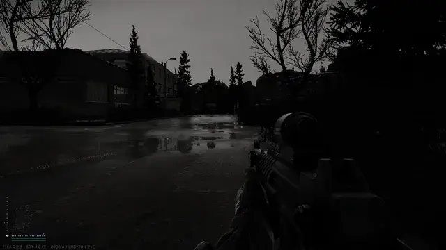
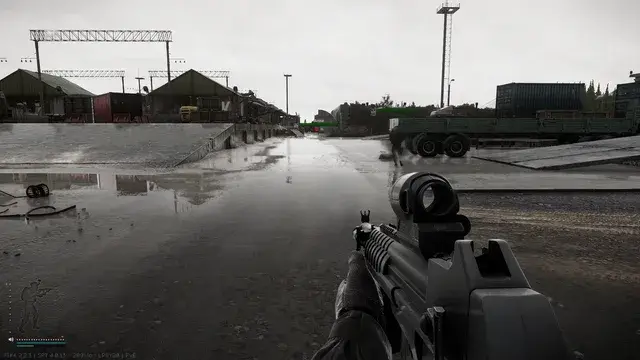

Mod
SSR Overkill
- Downloads
- 3,229
- Favourites
- 12
- Mod lists
- 25
This lightweight mod makes the ‘Ultra’ setting for Screen Space Reflection actually use Unity’s highest available quality level, reflections look clearer and with less shimmering. BSG uses Unity’s ‘High’ SSR preset for their Ultra in-game setting instead of the better looking Ultra or Overkill presets, this mod makes Ultra use Unity’s Overkill preset.
     
Version
1.1.0
SPT 4.0.13
Fika: compatible
2,941 downloads4.9 KB
This version uses a transpiler instead of a method patch, this seems to have fixed a bug where aiming/un-aiming with magnified optics caused the game to stutter in some cases.
VirusTotal: report 1
Version
1.0.0
SPT 4.0.13
Fika: compatible
288 downloads5.4 KB
Initial version
VirusTotal: report 1